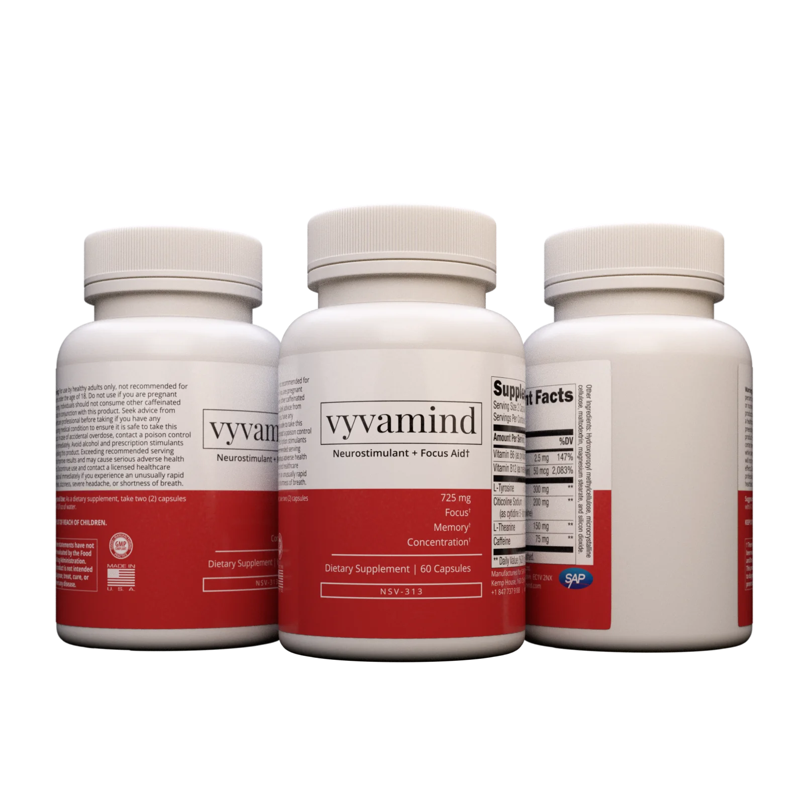

Many people nowadays are seeking natural ways to enhance their cognitive abilities. There is a rising interest in cheap natural brain boosters. These all-natural brain boosters promise to enhance focus, memory, and overall mental agility without the need for synthetic or harmful chemicals. When looking for the best brain supplements, it's important to consider not only their efficacy but also their safety profile. Among the various options available, the best supplement for mind clarity would ideally blend effectiveness with natural ingredients. Thus, if you're aiming to sharpen your mind and maintain optimal brain health, natural brain boosters can be a worthy addition to your daily regimen
Unparalleled focus and clarity
The supplement is specifically formulated to boost memory retention and recall.
Ingredients in Vyvamind have been clinically proven to increase brain energy by 14%, cell membrane formation by 26%, and to significantly improve performance in memory, visual tracking and reaction speed tests. All of this is combined with a subtle shot of caffeine to eliminate fatigue and boost productivity.